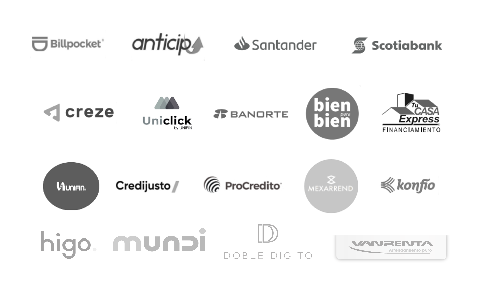

Nuestra Historia
2016
Los hermanos Casas se unen para formar la empresa a principios de este año, teniendo como primeros clientes la administración una SOFOM.
2017
La cartera de empresas creció y ahora administran 3 SOFOMES a nivel nacional, cada una de ellas ofreciendo diferentes productos financieros, lo que hizo que la empresa empezara a especializarse en diferentes productos.
2018
Debido a la alta demanda de diferentes productos financieros, GRUPO IC inicio con su propia incubadora de productos financieros.
2019
Fundación del primer fideicomiso, la empresa inicio a dar sus propios créditos, con financiamiento propio.
2020
Este año fue un año que marco la historia de GRUPO IC, diversificando los productos que ofrece y triplicando todas sus operaciones, así como su expansión en 6 ciudades nuevas y 11 productos financieros nuevos.
2021
Nos enfocamos en ofrecer soluciones 100% tecnológicas y personalizadles para nuestros clientes, para darle acceso a crédito a muchas más personas en tiempo récord.
2022
Fundamos nuetra propia SOFOM e iniciamos operaciónes con APOLO dx
Nuestos socios

DATOS DE LA EMPRESA
APOLO Dx es una plataforma especializada en administración, acreditación y comercilización más completa del mercado.
Otorgando al cliente seguirdad, control y especialización en créditos.
"